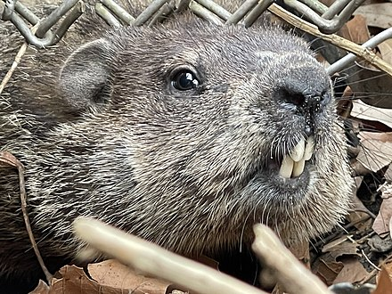
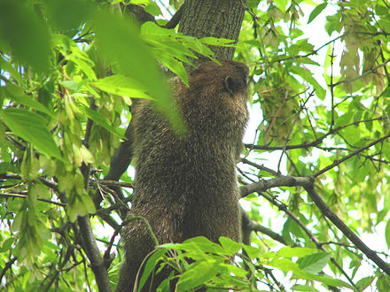
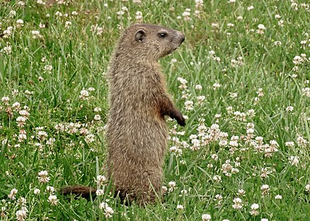

From Wikipedia, the free encyclopedia.
The groundhog (Marmota monax), also known as a woodchuck, is a rodent of the family Sciuridae, belonging to the group of large ground squirrels known as marmots. The groundhog is a lowland creature of North America; it is found through much of the Eastern United States, across Canada and into Alaska. It was first scientifically described by Carl Linnaeus in 1758.
The groundhog is also referred to as a chuck, wood-shock, groundpig, whistlepig, whistler, thickwood badger, Canada marmot, monax, moonack, weenusk, red monk, land beaver, and, among French Canadians in eastern Canada, siffleux. The name "thickwood badger" was given in the Northwest to distinguish the animal from the prairie badger. Monax (Móonack) is an Algonquian name of the woodchuck, which means "digger". Young groundhogs may be called chucklings.
The groundhog is by far the largest sciurid in its geographical range, excepting British Columbia where its range may abut that of its somewhat larger cousin, the hoary marmot. Adults may measure from 41.8 to 68.5 cm (16 7⁄16 to 26 15⁄16 in) in total length, including a tail of 9.5 to 18.7 cm (3 3⁄4 to 7 3⁄8 in). Weights of adult groundhogs typically fall between 2 and 6.3 kg (4 lb 7 oz and 13 lb 14 oz).
Groundhogs have four incisor teeth, which grow 1.5 millimetres (1⁄16 in) per week. Constant usage wears them down again by about that much each week. Unlike the incisors of many other rodents, the incisors of groundhogs are white to ivory-white.Groundhogs are well-adapted for digging, with powerful, short legs and broad, long claws. The groundhog's tail is shorter than that of other sciurids—only about one-fourth of body length.
The etymology of the name woodchuck is unrelated to wood or chucking. It stems from an Algonquian (possibly Narragansett) name for the animal, wuchak. The similarity between the words has led to the popular tongue-twister:
In the wild, groundhogs can live up to six years with two or three being average. In captivity, groundhogs reportedly live up to 14 years. Human development, which often produces openings juxtaposed with second growth trees that are incidentally also favored by groundhogs, often ensures that groundhogs in well-developed areas are nearly free of predators, beyond humans (through various forms of pest control or roadkills) or mid-to-large sized dogs.
Wild predators of adult groundhogs in most of eastern North America include coyotes, badgers, bobcats, and foxes (largely only red fox). Many of these predators are successful stealth stalkers so can catch groundhogs by surprise before the large rodents can escape to their burrows; badgers likely hunt them by digging them out from their burrows. Coyotes in particular are sizable enough to overpower any groundhog, with the latter being the third most significant prey species per a statewide study in Pennsylvania.
The time spent observing groundhogs by field biologists represents only a small fraction of time devoted to the field research. W.J. Schoonmaker reports that groundhogs may hide when they see, smell, or hear an observer.Marmot researcher Ken Armitage states that the social biology of the groundhog is poorly studied. Despite their heavy-bodied appearance, groundhogs are accomplished swimmers and occasionally climb trees when escaping predators or when they want to survey their surroundings. They prefer to retreat to their burrows when threatened; if the burrow is invaded, the groundhog tenaciously defends itself with its two large incisors and front claws. Groundhogs are generally agonistic and territorial among their own species and may skirmish to establish dominance. Outside their burrow, individuals are alert when not actively feeding. It is common to see one or more nearly motionless individuals standing erect on their hind feet watching for danger. When alarmed, they use a high-pitched whistle to warn the rest of the colony, hence the name "whistle-pig". Groundhogs may squeal when fighting, seriously injured, or caught by a predator. Other sounds groundhogs may make include low barks and a sound produced by grinding their teeth. David P. Barash wrote that he witnessed only two occasions of upright play-fighting among woodchucks and that the upright posture of play-fighting involves sustained physical contact between individuals and may require a degree of social tolerance virtually unknown in M. monax. He said it was possible to conclude, alternatively, that upright play-fighting is part of the woodchuck's behavioral repertory but rarely shown because of physical spacing and/or low social tolerance.
